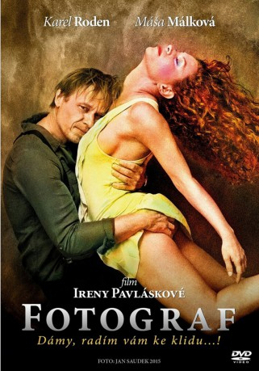

#6232 Fotograf
 
 IMDB-Wertung: 6.4 / 10
IMDB-Wertung: 6.4 / 10  Tomatometer: 86
Tomatometer: 86  Metascore: 0
Metascore: 0 
The story is freely inspired by the life and work of Jan Saudek, who is probably the most well-known Czech photographer internationally and has indisputably been involved in the development of international photography. He has exhibited and sold his work in the largest galleries and art houses, he has earned international recognition and awards, he enjoys great popularity and interest - he is a true phenomenon.
Jahr: 2015
Dauer: 134 Minuten
FSK:
Land: Tschechische Republik Studio: Lighthouse Home EntertainmentTonspuren:
Untertitel:
Auflösung: 1080p (1920x1080) Größe: 8273 MB
Genre: Drama, Komödie, Biographie
Regisseur: Irena Pavlásková
Drehbuch: Jonathan Lynn
Soundtrack:
Darsteller:
 Karel Roden als Jan Saudek
Karel Roden als Jan Saudek- Marie Málková als Líba
- Zuzana Vejvodová als Klára
- Václav Neuzil als Marek
- Vilma Cibulková als Vera Zílová
- Marika Sarah Procházková als Vendelína
- Vanda Konecná als
- Jenovéfa Boková als Anicka
- Patrik Dergel als Researcher
- David Cerný als
- Ivanka Devátá als Mother in law
 Petra Lustigová als Jan's attorney
Petra Lustigová als Jan's attorney- Marian Roden als Stb man #2
- Jirí Ployhar als Stb man #1
- Igor Orozovic als Younger Jan Saudek
- Milan Peroutka als
- Jan Rejzek als Art Critic
- Jan Saudek als Himself
- Vilém Udatný als Publisher
- Petr Vondrácek als Tv interviewer
- Jitka Sedlácková als Alice
- Lenka Loubalová als
- Natálie Rehorová als
- Dagmar Zázvurková als
- Michaela Jílková als Tv documentarist
- Jirí Balcárek als
- Slávek Bilský als
- Zbigniew Czendlik als
- Hana Cízková als
- Ozorovic Igor als
- Iveta Jirícková als
- Lukás Juza als Doctor
- Dana Marková als
- Tomás Materna als
- Martina Mensíková als Radio interviewer
- Rostislav Novák als Líba's father
- Anna Polcarová als
- Zdenka Sajfertová als Jarka
- David Sir als Galerist Konecny
- Hana Skálová als Retro Lover
- Blazková Tereza als
- Lenka Vychodilová als
- Andrea Gerak als Exhibition Visitor , uncredited
Datei: X:\2015(A-F)\Fotograf (2015, FSK, 1920x1080).mkv seit 19.05.2017
Festplatte: HD 2015(A-Z)
 Es gibt insgesamt 143 Filme in der Gruppe '2015(A-F)'
Es gibt insgesamt 143 Filme in der Gruppe '2015(A-F)'